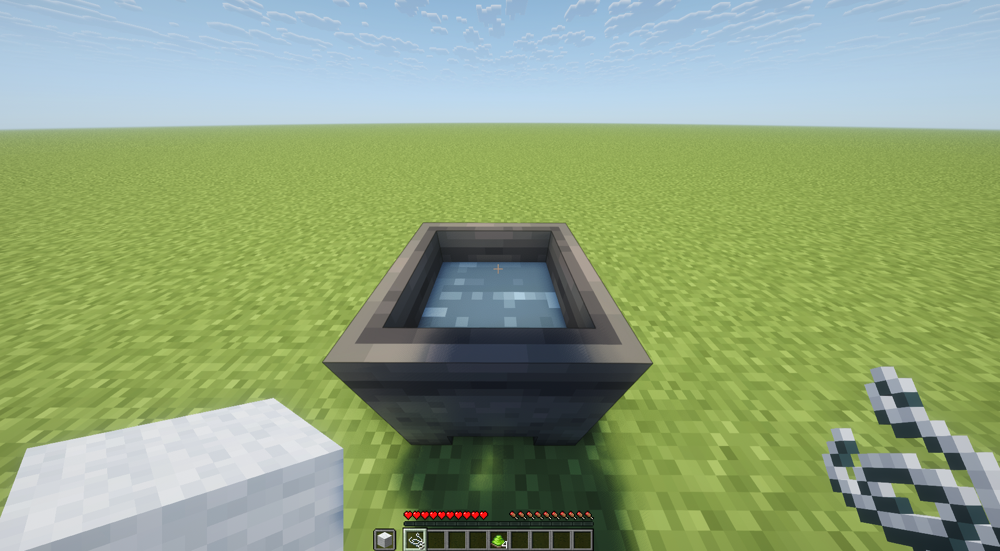
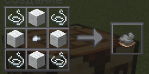
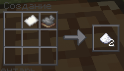
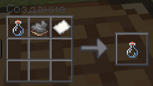
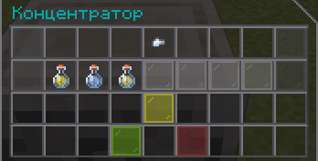
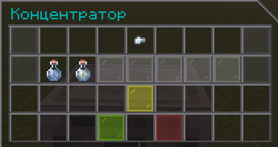
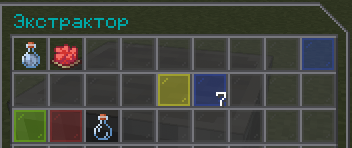

💋 Крафт секс-предметов
Семь расходников для команды /sex. Подробнее что они делают — на странице секс-экономики.
Презерватив (котёл)

Ингредиенты: 2 крепких нити (в руке) + 1 мокрая шерсть (в инвентаре). ПКМ по котлу с водой. Выход: 3 презерватива.
Бронежилет для члена (верстак)

Ингредиенты: 4 крепких нити + 4 мокрых шерсти + 1 железный самородок. Сетка 3×3:
нить — шерсть — нить
шерсть — самородок — шерсть
нить — шерсть — нить
Аспирин (верстак)

Ингредиенты: 1 бумага + 1 сушёный серый гриб. Выход: 2 аспирина.
Тест на сифилис (верстак)

Ингредиенты: 1 бумага + 1 сушёный серый гриб + 1 стеклянная бутылка. Всё в верхнем ряду 3×3: бумага — гриб — бутылка.
Виагра (концентратор)

Ингредиенты: 1 аммиак + 1 серная кислота + 1 эфедрин-сульфат + 1 железный самородок (катализатор).
Аммиак и серную кислоту варят в концентраторе, эфедрин-сульфат — в экстракторе. Подробности ниже.
Секс-тоник (концентратор)

Ингредиенты: 1 натриевая известь + 1 аммиак + 1 железный самородок (катализатор). Выход: 1 тоник.
Пенициллин (экстрактор)

Ингредиенты: 1 сушёный мухомор + 1 аммиак. В машине должна быть вода 8/8.
Как получить мокрую шерсть
Мокрая шерсть (WET_WOOL) — ингредиент для презерватива и бронежилета.
- Возьмите в руку любую шерсть (белую, оранжевую, синюю — неважно).
- Поставьте котёл и залейте его водой ведром.
- ЛКМ по котлу с водой (удар, не ПКМ).
Из котла выпадет кастомный предмет WET_WOOL. Один уровень воды расходуется.
Как получить крепкую нить (THREAD)
В верстаке: 3 мокрых шерсти → 1 нить.
Где взять прекурсоры
Некоторые ингредиенты (аммиак, серная кислота, эфедрин-сульфат) сами варятся в машинах. Подробности ниже.
Аммиак (AMMONIA)
В концентраторе: 32 костной муки + 1 железный самородок (катализатор).
Сера (SULFUR)
В концентраторе: 16 пороха + 1 железный самородок (катализатор).
Серная кислота (H2SO4)
В концентраторе: 1 сера + 1 ведро воды + 1 железный самородок (катализатор).
Псевдоэфедрин (PSEUDOEPHEDRINE)
В концентраторе: 16 адского вартания + 1 железный самородок (катализатор).
Эфедрин-сульфат (EPHEDRINE_SULFATE)
В экстракторе: 1 псевдоэфедрин + 1 серная кислота.
Натриевая известь (LIME)
В концентраторе: 32 песка + 16 угля + 1 железный самородок (катализатор).
Сушёный серый гриб (DRIED_MUSHROOM_GREY)
В сушилке: положите свежий коричневый гриб — получите сушёный.
Сушёный мухомор (DRIED_MUSHROOM_FLY_AGARIC)
В сушилке: положите свежий красный мухомор — получите сушёный.